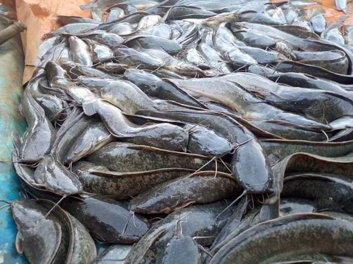
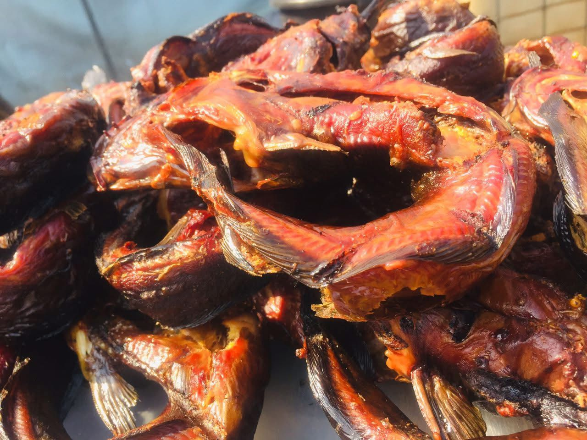
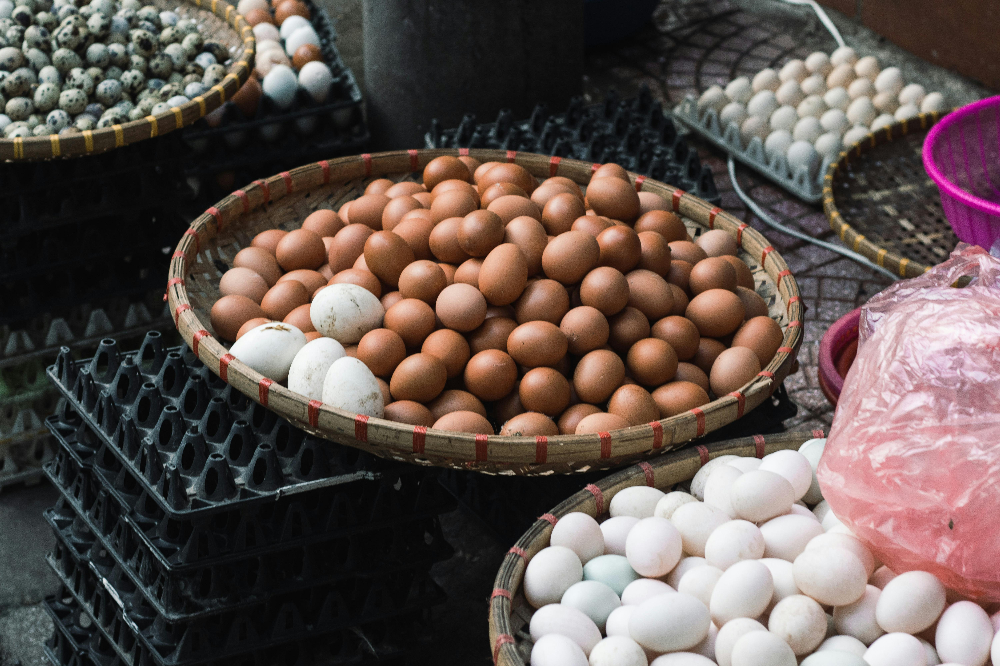
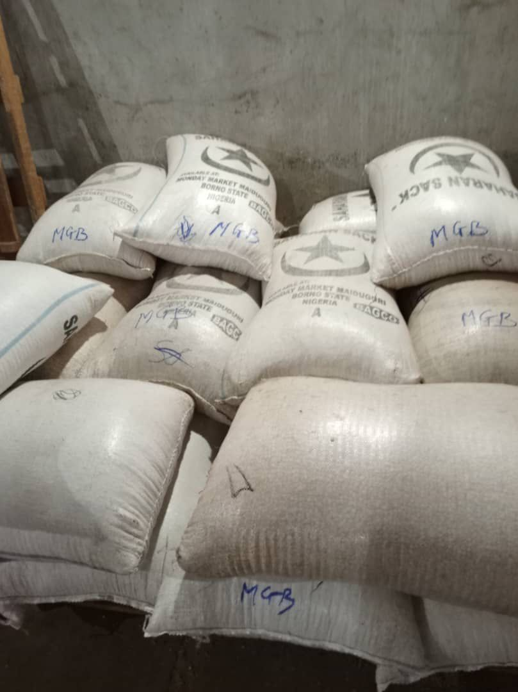
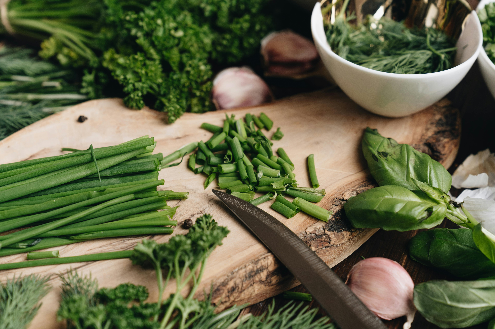

Nos Produits
Découvrez nos produits frais et transformés, disponibles à la vente

Silure Frais
Poisson frais de qualité supérieure, élevé dans nos bassins. Riches en protéines et oméga-3.
En stock
Commander

Poisson Fumé
Filets de poisson fumés selon des méthodes traditionnelles. Saveur authentique et conservation prolongée.
En stock
Commander

Œufs Frais
Œufs de poules élevées en plein air, riches en nutriments. Conditionnés par plateaux de 30 unités.
En stock
Commander

Légumes Frais
Tomates, concombres, poivrons et autres légumes cultivés sous serre. Fraîcheur garantie.
En stock
Commander

Céréales
Riz, maïs et autres céréales cultivées localement. Bientôt disponibles.
En stock
Pré-commander

Herbes Aromatiques
Basilic, persil, menthe et autres herbes aromatiques cultivées biologiquement.
En stock
Commander